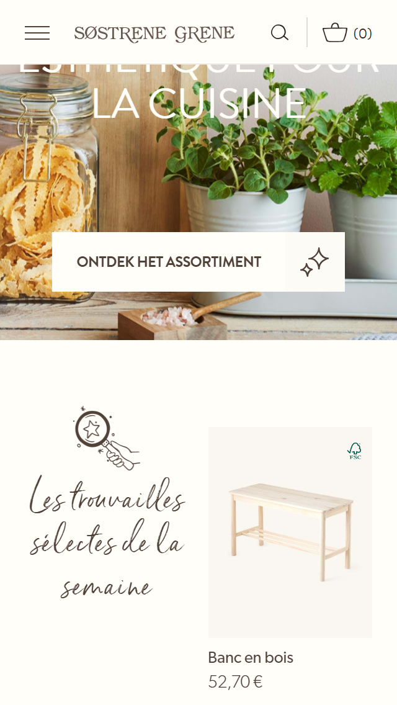
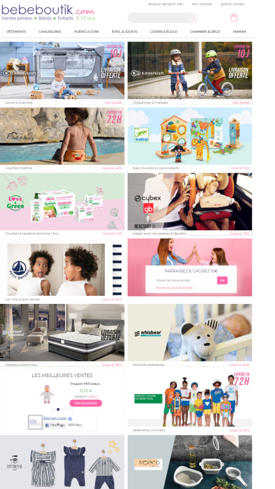
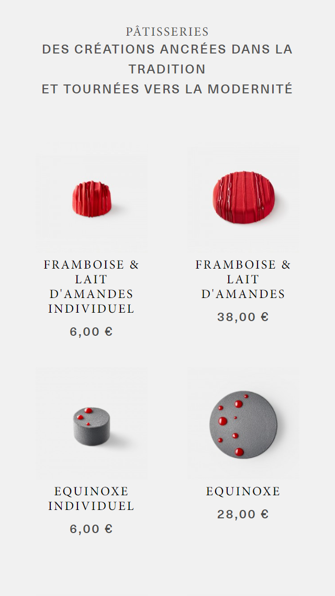

- Visual Hierarchy
- Sostrene Grene
- sostrenegrene.com
- 
- Hicks Law
- La Romainville
- bebeboutik
- 
- White space and clean design
- Bebe Boutik
- laromainville
- 
Sostrene Grene website has the elements that capture users attention and draws their eyes.The biggest eye-catcher is the banner image, then comes the child images (products displayed for sale).
Choice is a strange thing. The decisions we make shape everything we do. Hick’s law describes the time it takes for a person to make a decision. The varietry of choices given in this website increases the descision time.
Space is left between images, text, margins and other elements, it is left untouched in order to smooth things out and transform a page into something elegant. It is also the blank space that reminds us that simpler designs are beautiful and that we don’t need to create a layout filled with text and graphical elements to deliver a clear and direct message.